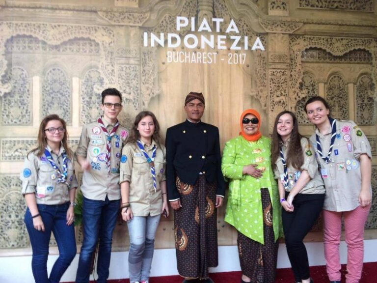

Cercetași la Ambasada Indoneziei

În data de 13 mai 2017, cercetașii de la Cabana Scout au fost implicați în organizarea evenimentului „Piața Indonezia”, organizat de Ambasada Indoneziei la București. A fost o activitate la finalul căreia Valentina ne-a împărtășit cu nerăbdare impresiile sale:
Încep prin a spune că am așa un sentiment… știți voi, extrem de plăcut… când îmi opresc privirea pe foaia goală știind că urmează să scriu și să transmit altora ce activități am mai făcut noi la cercetași.
Iată că de această dată cercetașii au ajuns la a doua întâlnire cu Ambasada Indoneziei. Totul a început anul trecut, când am inclus în program vizita la Ambasadă, unde am aflat câte puțin din cultura și tradițiile lor, am vizitat și admirat tot ce era prezentat. Și fiindcă ne-a plăcut atâââât de mult, le-am propus ca pe viitor, dacă au nevoie de voluntari, să ne cheme și noi o să venim cu mare drag.
E, și uite că nu a uitat! Cu ocazia festivalului „Piața Indonezia” ne-au cerut ajutorul pentru diferite treburi. Însă, ce ne-au propus să facem neapărat a fost: to enjoy the show. Și am facut-o din plin! Dansuri, cântece, arte marțiale, artă culinară, preparate indoneziene, parada nunții în stil indonezian, batik workshop-uri, fashion shows, flash mob… toate, toaaate au creat o atmosferă care îți dădea senzația că vrei să oprești momentul, să îl cuprinzi în mâna și să-l iei acasă într-un borcănaș ca să ai și pentru mai târziu…
Am avut și deosebita plăcere să îi cunoaștem pe toți cei care se preocupă de bunul mers al ambasadei în general și de această acțiune în psecial, printre care, bineînțeles, și ambasadorul însăși.. Chiar se observa că fiecare avea rolul lui în acest întreg și că oricât de mică era sarcina pe care o avea de făcut, parcă nu era același lucru fără acesta.
În final nu mai rămân decat mulțumirile și amintirile frumoase și mai ales dorința de a păstra legătura și pe viitor.
Terima kasih ! (Multumesc!)
Valentina Petre